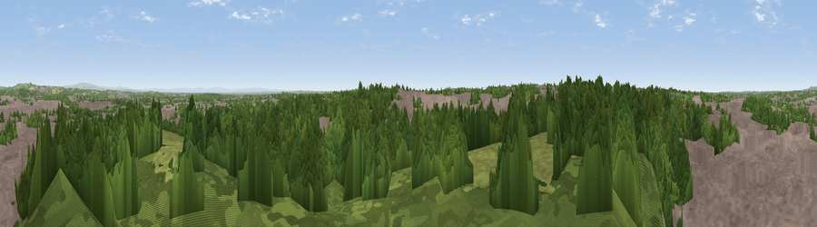

Viewpoint near St Helens
#20025 in England · top 50% of its area beats it · near St HelensThe view, rendered

A 360° render of this exact spot computed from the terrain model, tree cover and land cover — summer colours, afternoon light, calibrated against photographs of famous viewpoints. Real trees, hedges and buildings will differ in detail.
The panorama
Grey silhouette: terrain skyline in each direction (720 bearings, Earth curvature and refraction included). Dashed green: skyline with trees (+15 m) and buildings (+8 m) as obstacles. Blue strip: how far the ground is visible on each bearing.
Where the view opens
Wedge length = distance to the farthest visible ground on that bearing (vegetation-aware). Rings at 10, 25 and 50 km.
What fills the view
55% woodland · 34% built-up · 10% grassland · 1% cropland
Angular shares of the visible panorama (visual magnitude), not map area. Landscape diversity 0.43 (0–1 Shannon).
Key numbers
More beautiful places nearby
The staircase of upgrades: each row has a higher view potential than everything closer. Driving times are estimates from straight-line distance, calibrated against real road routing — check an actual route before setting out.
| Place | Direction | Drive | Score |
|---|---|---|---|
| Viewpoint near Moss Bank | N · 5 km | ~12 min | 55.2 |
| Viewpoint near Haydock | ENE · 6 km | ~13 min | 57.9 |
| Viewpoint near Haydock | ENE · 6 km | ~14 min | 61.1 |
| Viewpoint near Billinge | NNE · 8 km | ~16 min | 68.0 |
| Billinge Hill | NNE · 8 km | ~16 min | 73.8 |
| Viewpoint near Dalton | N · 14 km | ~26 min | 74.2 |
| Beacon Hill | S · 17 km | ~30 min | 77.3 |
| White Brow | NE · 24 km | ~39 min | 82.9 |
53.43979, -2.74250 · source: screening · position refined by local search. Computed location — check access rights before visiting.